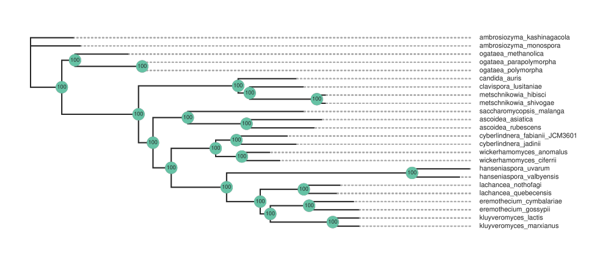

Yeast Tutorial
This tutorial is a step-by-step guide to reproduce the results of the paper.
Downloading the data
The dataset used in the paper is available at figshare:
Shen, Xing-Xing (2018). Tempo and mode of genome evolution in the budding yeast subphylum. figshare. Dataset. https://doi.org/10.6084/m9.figshare.5854692.v1
The data can be downloaded and extracted with these commands:
wget https://ndownloader.figshare.com/files/13092791 -O 0_332yeast_genomes.zip
unzip 0_332yeast_genomes.zip
cd 0_332yeast_genomes
unzip 332_genome_annotations.zip
cd pep
Setup
You can create the input file for the 24 species shown in the paper but saving this text as yeast24.csv:
file,data_type
ambrosiozyma_kashinagacola.max.pep,Protein
ambrosiozyma_monospora.max.pep,Protein
ascoidea_asiatica.max.pep,Protein
ascoidea_rubescens.max.pep,Protein
candida_auris.max.pep,Protein
clavispora_lusitaniae.max.pep,Protein
cyberlindnera_jadinii.max.pep,Protein
cyberlindnera_fabianii_JCM3601.max.pep,Protein
eremothecium_cymbalariae.max.pep,Protein
eremothecium_gossypii.max.pep,Protein
hanseniaspora_uvarum.max.pep,Protein
hanseniaspora_valbyensis.max.pep,Protein
kluyveromyces_lactis.max.pep,Protein
kluyveromyces_marxianus.max.pep,Protein
lachancea_nothofagi.max.pep,Protein
lachancea_quebecensis.max.pep,Protein
metschnikowia_hibisci.max.pep,Protein
metschnikowia_shivogae.max.pep,Protein
ogataea_methanolica.max.pep,Protein
ogataea_parapolymorpha.max.pep,Protein
ogataea_polymorpha.max.pep,Protein
saccharomycopsis_malanga.max.pep,Protein
wickerhamomyces_anomalus.max.pep,Protein
wickerhamomyces_ciferrii.max.pep,Protein
Running Orthoflow
The following command will run Orthoflow:
orthoflow run --inputs yeast24.csv --no-infer-tree-with-cds-seqs
Note
We need to turn off the option infer_tree_with_cds_seqs because we are using protein sequences.
Results
The results will be saved in the results folder.
For example, you should see a file called results/supermatrix/supermatrix_tree_render.protein.png

Mini Test
The repository includes a mini version of the dataset that can be used for testing. It includes a handful of genes from these files:
ambrosiozyma_kashinagacola.max.pep
ambrosiozyma_monospora.max.pep
ascoidea_asiatica.max.pep
ascoidea_rubescens.max.pep
candida_auris.max.pep
To run this mini test, do the following from the root of the repository:
cd tests/test-data-yeast/
orthoflow run --inputs yeast5.csv --no-infer-tree-with-cds-seqs
This test is run as part of the continuous integration process. See the .github/workflows/yeast.yml file for details.
The current status of this test is shown here: